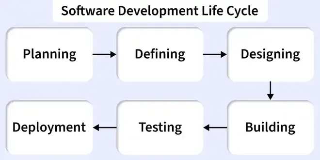

2.1 Software Development Life Cycle
The Software Development Life Cycle (SDLC) is a structured framework that defines the phases, activities, deliverables, and milestones through which software is planned, built, tested, deployed, and maintained. An SDLC model is a specific instance of this framework — for example Waterfall, Spiral, or Agile — that prescribes how phases are ordered, overlapped, or repeated.
SDLC connects directly to the generic software process activities introduced in Topic 1 §1.9: feasibility, requirements, design, coding, testing, implementation, and maintenance. The difference is that an SDLC model decides whether these activities run strictly in sequence, in loops, in parallel, or in increments.

Standard SDLC phases
- Planning / Feasibility. The organisation defines project scope, checks technical and economic viability, and allocates resources before committing to full development.
- Requirements analysis. Analysts elicit and document what the system must do and produce the Software Requirements Specification (SRS).
- Design. Architects create high-level and detailed designs and produce the software design document (SDD) and interface specifications.
- Implementation (coding). Developers translate the approved design into source code according to coding standards.
- Testing. Testers run unit, integration, system, and acceptance testing to find and report defects.
- Deployment. The release is installed, configured, and handed over, and users are trained before the system goes live.
- Maintenance. The team performs corrective, adaptive, and perfective changes throughout the operational life of the product.
Entry and exit criteria (exam favourite)
Each phase has entry criteria (what must be complete before starting) and exit criteria (deliverables that must be approved before moving on):
| Phase | Entry criteria | Exit criteria (deliverables) |
|---|---|---|
| Requirements | The project charter is approved and the feasibility study has been accepted. | A reviewed and signed-off Software Requirements Specification (SRS) is available. |
| Design | The SRS has been approved by stakeholders. | A reviewed software design document, database schema, and user-interface mock-ups are complete. |
| Coding | The design document has been approved. | Source code and unit-test results for all modules are ready. |
| Testing | A testable build exists and the test plan has been approved. | The test report, defect log, and customer acceptance sign-off are complete. |
| Deployment | A tested release candidate is ready for installation. | The system is installed in the target environment and user training is complete. |
| Maintenance | The system is running in production. | Change requests are handled according to the agreed service-level agreement. |
Choosing an SDLC model
Model selection depends on project context:
- Requirements stability. When specifications are fixed, Waterfall or the V-Model is often appropriate. When requirements change frequently, Agile or the Prototype model is usually a better fit.
- Project size and complexity. Large, safety-critical systems need rigorous models with strong documentation. Smaller applications can often use RAD or Agile successfully.
- Risk level. High technical or business risk favours the Spiral model (§2.5) or incremental delivery so that risk is reduced early.
- Customer involvement. RAD and Agile require active users throughout the project, whereas Waterfall relies on upfront sign-off of requirements and design.
- Time-to-market. Incremental development, RAD, and Agile typically deliver working software to users earlier than a single end-of-project release.
Q: Define SDLC. List its phases with entry and exit criteria for any three phases. How does SDLC relate to the software process in Topic 1?
Model answer points:
- Define SDLC as a structured framework of phases from planning through maintenance, and explain that an SDLC model is a specific way of ordering, overlapping, or repeating those phases.
- List all seven standard phases and give entry and exit criteria for at least requirements, design, and testing using the table above.
- Link to Topic 1 §1.9: the underlying process activities are the same, but the chosen model defines their sequence, iteration, and overlap.
- Explain model selection using requirements stability, project size, risk level, customer involvement, and schedule pressure.